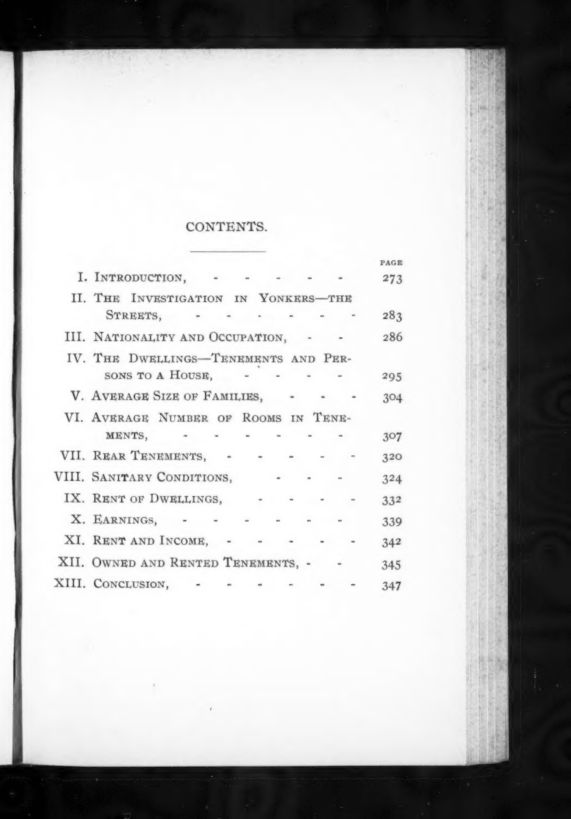

Bogart, 1898: como moravam os operários de Yonkers
Leitura: 12 min
Ernest L. Bogart usa um levantamento de 587 casas e 6.519 moradores para medir aglomeração, saneamento, aluguel e renda dos operários de Yonkers, cidade fabril vizinha de Nova York.


Numa casa da Garden Street, em Yonkers, oito pessoas dormiam em dois cômodos pequenos. Em apartamentos de três cômodos, o levantamento encontrou famílias de 9, 10, 11 e 12 pessoas. Os casos foram anotados entre março de 1896 e agosto de 1897 por uma inspetora que o conselho de saúde nomeara por influência de duas líderes cívicas da cidade, em fichas que registravam, além do estado sanitário, nacionalidade, ocupação, aluguel e renda de cada família.
As fichas são a base de The Housing of the Working People in Yonkers, de Ernest Ludlow Bogart, nº 5 do terceiro volume dos Economic Studies, de outubro de 1898. Bogart observa que a literatura sobre moradia operária tratava quase só das grandes cidades, como Nova York, Chicago, Filadélfia, Boston e Baltimore, e que o problema existia também nas cidades pequenas. Yonkers, cidade fabril às margens do Hudson, colada ao limite norte da Grande Nova York, tinha 40 mil habitantes em 1897; fora incorporada como cidade em 1872, com cerca de 18 mil. O levantamento foi dirigido por Mary Marshall Butler, presidente do Woman’s Institute, e pela senhora William Sharman, secretária da Civic League, que cederam o material ao autor.
Que cidade era Yonkers?
Segundo o censo de 1890, citado pelo autor, 11.303 pessoas trabalhavam na indústria da cidade, e 5.132 delas, quase a metade, na fabricação de tapetes e chapéus: as três fábricas de tapetes empregavam cerca de 4 mil pessoas, e as três chapelarias, cerca de 1.200. Os estrangeiros eram 34,14% da população, contra 26,14% no condado de Westchester, o que punha Yonkers em quarto lugar no estado de Nova York, atrás da cidade de Nova York, de Long Island City e de Buffalo; 69,74% dos habitantes tinham pais estrangeiros.
Bogart descreve uma cidade que melhorava. Abriu em 1895 um banho público gratuito, sendo a primeira cidade do estado a usar a autorização legal daquele ano, criou novas inspetorias sanitárias e estendeu esgotos e ruas asfaltadas. A mortalidade caiu de 23,33 por mil habitantes em 1892 para 17,97 em 1897. A pergunta do estudo é se a moradia dos trabalhadores acompanhou esse avanço.
Quão aglomerada era a cidade?
O número médio de pessoas por casa subiu de 7,87 em 1884 para 8,55 em 1890, porque as casas cresceram só metade do que cresceu a população, e recuou para 8,50 em 1897, depois de um surto de construção. No país, a média era de 5,45 em 1890. Das 124 cidades com mais de 25 mil habitantes no censo de 1890, só nove tinham mais pessoas por casa que Yonkers, entre elas Nova York, com 18,52, e Chicago, com 8,60. A cidade era a décima do país em concentração e a 93ª em tamanho.
O levantamento cobriu dezesseis ruas típicas em cinco dos sete distritos, com 587 casas, 1.394 famílias e 6.519 pessoas, cerca de um sexto da população.
“Favelas, a rigor, não há nenhuma em Yonkers.” (Of slums, strictly speaking, there are none in Yonkers.)
Quem morava nas ruas pesquisadas?
Bogart agrupa as ruas por localização e nacionalidade predominante. Clinton, St. Mary e Washington formavam os “Flats”, habitados por um grande elemento estrangeiro, sobretudo eslavo, que trabalhava nas chapelarias vizinhas; James e John, dois becos curtos, eram, nas palavras do autor, o lar da colônia negra; Elm e Palisade, na zona comercial, tinham população mista; Carlisle, Garden, Mulford, Parker, Orchard e Vineyard eram quase exclusivamente irlandesas; New School, School e Webster eram procuradas sobretudo pelos nascidos nos Estados Unidos, com uma pequena colônia italiana na primeira.
Entre os chefes de família, 51% eram nascidos na Irlanda e 6,9% na Alemanha; seguiam-se húngaros, negros e britânicos, e as nacionalidades eslavas somavam mais de 11%. As latinas eram 2,8%, mais da metade italianos. Só 15,7% eram classificados como americanos. Os de origem estrangeira eram 84,3% nas ruas pesquisadas, contra 69,7% na cidade, o que, diz o autor, repete o que se viu em todas as pesquisas semelhantes. Por religião, 73,1% das famílias eram católicas romanas ou gregas, 18,2% protestantes e 6,1% judias.
Dos 4.322 adultos, 32,3% trabalhavam na indústria, quase metade dos que tinham ocupação remunerada, contra cerca de 15% nos bairros pobres de Nova York e Chicago, segundo o Commissioner of Labor. Os desempregados eram só 2,4%. E a população era estável: 60% das famílias viviam em Yonkers havia dez anos ou mais, e só 8% havia menos de dois, o que, para Bogart, garante que qualquer melhoria beneficiaria quem se pretendia ajudar.
Quantas pessoas dividiam cada cômodo?
A casa típica do operário era um sobrado de madeira de dois ou três andares, quadrado como uma caixa; das cerca de 4.700 casas da cidade, umas 3.700 eram de madeira. A média de moradores subia com o número de apartamentos: 4,94 nas casas de uma família, 9,41 nas de duas, 13,91 nas de três, 18,94 nas de quatro e 29,25 nas de cinco ou mais. Menos de 40% das casas abrigavam três famílias ou mais, mas nelas vivia mais de 60% da população. O maior prédio, na Garden Street, tinha 15 apartamentos; nas grandes cidades comparadas, o máximo ia de 13 em Baltimore a 47 em Boston.
Bogart adota um padrão que ele mesmo considera exigente: superlotado é o domicílio com mais de duas pessoas por cômodo, contando quartos, sala e cozinha. Por esse critério, 653 pessoas, quase um quinto das 3.455 que viviam em apartamentos de dois a quatro cômodos, estavam em domicílios superlotados. O autor vê nisso uma das principais razões da existência do saloon. Pelo critério inglês, de duas pessoas ou mais por cômodo, eram 155 famílias, 11,12% do total, e 1.099 pessoas, 15,38%. Em Boston, a proporção da população nessas condições era de 2,03%; nas áreas urbanas da Inglaterra, em 1890, de 12,31%, que o autor considera um pouco acima da de Yonkers.
Segundo Bogart, a superlotação ocorria sobretudo entre estrangeiros: mais da metade dos que viviam assim em Yonkers eram húngaros, seguidos de irlandeses e italianos. Entre os húngaros, quase todos os casos vinham de receber hóspedes; como a mulher muitas vezes também trabalhava, o autor conclui que a superlotação resultava menos da pobreza do que de um baixo padrão de conforto. Os hóspedes eram 583, 8,94% dos moradores, quase todos homens solteiros, o que, para ele, indica a necessidade de uma pensão para homens; na Clinton Street eram um quarto dos habitantes.
Como eram as condições sanitárias?
No conjunto, boas, diz Bogart: o terreno inclinado facilitava a drenagem, e muitos proprietários eram pequenos, morando nas próprias casas ou perto delas. Das 587 casas, 416, ou 70,88%, foram classificadas em boas condições, e 37 em más condições, com 6,15% da população. Os quintais estavam piores: mais de 1.300 pessoas viviam em casas com quintal sujo, e na Orchard Street a proporção passava de 43% das casas. Mais de 77% da população vivia em cômodos limpos. Os cômodos sujos, segundo o autor, concentravam-se entre os irlandeses de Orchard, Mulford, Garden e Vineyard; embora 15 apartamentos da Clinton fossem dados como sujos, era testemunho geral que os húngaros estavam entre os mais limpos dos moradores de cortiço.
O ponto mais grave eram os sanitários. Latrinas no quintal serviam 56,77% da população, e privadas com descarga, 40,32%. Em 12 casas, 256 pessoas dividiam uma única privada por casa, mais de 21 por privada, e em 26 casas, com 180 moradores, não havia sanitário algum, situação para a qual o autor diz não haver desculpa. Havia ainda 126 famílias, quase um décimo, morando em porões, proporção maior que a de Berlim e Hamburgo, de 7%, e cortiços de fundo de lote, com 360 moradores, que Bogart condena numa cidade com terra livre em todas as direções.
Quanto custava morar?
Bogart tabulou os aluguéis de 1.028 dos 1.394 domicílios; 205 eram ocupados pelos donos. O aluguel médio era de US$ 8,66 por mês, ou US$ 2,10 por cômodo, e o maior grupo, 185 domicílios, pagava entre US$ 8 e US$ 9. Por semana, 41,54% pagavam de US$ 1 a US$ 2, e só 15% mais de US$ 3, menos que nas grandes cidades, salvo Baltimore. O preço do cômodo caía com o tamanho do imóvel: US$ 2,66 num apartamento de um cômodo, US$ 2,38 no de dois e US$ 1,91 no de seis, o mais barato.
“os pobres têm de pagar os preços mais altos por tudo o que compram” (the poor have to pay the highest prices for all that they buy)
Daí, explica o autor, a causa econômica da sublocação: sai mais barato alugar um imóvel grande e sublocar parte dele do que alugar um pequeno. Mas ele desaconselha a prática, porque torna o orçamento do trabalhador dependente de um terceiro, numa vida já marcada pela instabilidade do emprego. Bogart registra também que, embora em regra os negros fossem forçados a pagar caro pela moradia, a John Street, habitada quase só pela população negra junto com a James, tinha o aluguel mais baixo por domicílio e por cômodo, porque eram becos de fundo com casas pequenas e baratas de madeira; a Palisade, rua comercial do centro, tinha o mais alto, US$ 2,68 por cômodo.
O aluguel pesava muito na renda?
Para 764 famílias havia dados de renda. A média semanal era de US$ 13,27, ou US$ 690,04 por ano com emprego contínuo, e cada um dos 1.043 assalariados ganhava em média US$ 9,72 por semana, perto dos US$ 519,96 anuais que o censo de 1890 dera para os 11.303 empregados da cidade. Os homens ganhavam US$ 11,62; as mulheres, US$ 7,90; os jovens, US$ 7,48. Nos bairros pobres pesquisados pelo Commissioner of Labor, a renda semanal por pessoa ia de US$ 8,36 em Nova York a US$ 9,88 em Chicago.
O autor remonta a relação entre renda e aluguel ao dr. Schwabe, chefe do escritório municipal de estatística de Berlim, que formulou em 1867 uma “lei social” a respeito, depois estendida pelo dr. Engel, do escritório real prussiano, a todos os gastos com necessidades. Em Yonkers, as famílias pesquisadas gastavam 13,49% da renda com aluguel, proporção próxima à encontrada em outros lugares. Bogart conclui que os trabalhadores da cidade não pagavam taxas exorbitantes e estavam, nisso, pelo menos tão bem quanto os de outras cidades. Só 14,7% das famílias moravam em imóvel próprio; o grupo de ruas irlandesas tinha a maior proporção de proprietários, e negros e italianos, escreve o autor, pareciam os menos poupadores, ao menos como donos de imóveis.
“Quanto menor a renda, maior a proporção gasta com aluguel.” (The smaller the income, the greater is the proportion which is expended for rent.)
Na minha leitura
Na minha leitura, o melhor do estudo de Bogart é o cuidado com a medida. Ele mostra que pessoas por casa, o indicador mais fácil, engana numa cidade de sobrados divididos, e desce a pessoas por cômodo, à distribuição por tamanho do imóvel e a um critério explícito de superlotação, testando o resultado contra o padrão inglês e o alemão. É a passagem da média para a distribuição, que ainda separa um diagnóstico sério de habitação de um número solto.
O capítulo do aluguel me parece o mais atual. Ao mostrar que o cômodo sai mais caro no imóvel pequeno, Bogart explica a sublocação e os hóspedes como resposta racional a preços, e não só como costume, e ao mesmo tempo aponta o custo escondido dessa escolha, o risco de renda. Junto com a regra de Schwabe, de que os pobres gastam uma fração maior da renda com moradia, o estudo antecipa a discussão sobre comprometimento de renda com aluguel que ainda orienta a política habitacional.
Glossário
- Cortiço (tenement house)
- prédio em que três ou mais famílias moram independentes, com entrada e escada comuns.
- Apartamento (tenement)
- conjunto de cômodos ocupado por uma família dentro de uma casa ou prédio.
- Superlotação
- no critério de Bogart, mais de duas pessoas por cômodo em média; no inglês, duas ou mais.
- Hóspede (boarder, lodger)
- pessoa sem laço de sangue ou casamento que mora com a família pagando pelo quarto.
- Cortiço de fundo (rear tenement)
- prédio construído nos fundos de um lote que já tem outro na frente.
- Lei de Schwabe
- regularidade segundo a qual a fração da renda gasta com aluguel cai à medida que a renda sobe.
- Commissioner of Labor
- chefe do órgão federal americano de estatísticas do trabalho, autor da pesquisa de 1894 sobre os bairros pobres das grandes cidades.
Fontes
- I. Introduction (pp. 273–282). Internet Archive (número completo, PDF)
- II. The Investigation in Yonkers — the Streets (pp. 283–285). Internet Archive (número completo, PDF)
- III. Nationality and Occupation (pp. 286–294). Internet Archive (número completo, PDF)
- IV. The Dwellings — Tenements and Persons to a House (pp. 295–303). Internet Archive (número completo, PDF)
- V. Average Size of Families (pp. 304–306). Internet Archive (número completo, PDF)
- VI. Average Number of Rooms in Tenements (pp. 307–319). Internet Archive (número completo, PDF)
- VII. Rear Tenements (pp. 320–323). Internet Archive (número completo, PDF)
- VIII. Sanitary Conditions (pp. 324–331). Internet Archive (número completo, PDF)
- IX. Rent of Dwellings (pp. 332–338). Internet Archive (número completo, PDF)
- X. Earnings (pp. 339–341). Internet Archive (número completo, PDF)
- XI. Rent and Income (pp. 342–344). Internet Archive (número completo, PDF)
- XII. Owned and Rented Tenements (pp. 345–346). Internet Archive (número completo, PDF)
- XIII. Conclusion (pp. 347 ss.). Internet Archive (número completo, PDF)
- Número completo digitalizado (domínio público): Internet Archive.
Documento em domínio público (EUA, publicado antes de 1931), via JSTOR Early Journal Content e Internet Archive. Resumo e comentário do autor deste site, sem afiliação com a American Economic Association. Encontrou um erro? Escreva: a correção é publicada no próprio texto, com data.
← ES 17 · Aldrich, 1898: como a American Federation of Labor se organizou ES 19 · Micheli, 1898: a Suíça vota a compra das suas ferrovias →